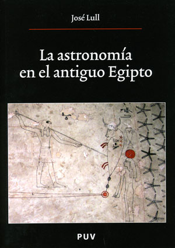

La astronomía en el antiguo Egipto
Reseña por Jorge I. Zuluaga

Ver reseña en GoodReads (necesita cuenta)
Estoy en mi "período Egipcio" (mis pasiones vienen por olas) y encontrar un texto que combine egiptología con astronomía (mi profesión) como dice el comercial, "no tiene precio".
El libro es bastante académico en muchos apartes, tanto del lado egiptológico como del lado astronómico. Sin embargo, eso lo hace precisamente una joya para cualquiera que conozca bien una de las dos cosas. Pero ¿qué pasa con quiénes no dominamos ninguna de las dos? ¡pues hay que probar! Lo que es definitivo (pero esto no es una característica solo de este libro) es que no todos encontraremos completamente digerible la totalidad del contenido (yo me "atragante" en más de una ocasión). Sin embargo, y como pasa siempre con los buenos libros, el "premio" al final vale la pena un par de tragos difíciles.
¿Y cuál es pues el "premio"?. Lo resumo en esta reseña.
Para mí, como #KemetLover y astrónomo, lo mejor del libro del Profesor Lull es descubrir que, a pesar de que la "ciencia" Egipcia posiblemente nunca alcanzó los niveles vistos en Grecia y Mesopotamia (las fuentes primordiales de las que se alimento la ciencia contemporánea), es claro que Egipto podría describirse como una sociedad esencialmente astronómica. Sus complejos mitos y cosmogonías, su elaborada religión y los ritos asociados, la imagen del rey (o faraón) y de su relación con la naturaleza, con la divinidad y con su pueblo, y de allí la política y la administración pública, hasta lo más básico la alimentación, fundamentalmente dependiente de la agricultura cuyos ciclos eran dominados por la crecida periódica del Nilo, estaban profundamente atados a los fenómenos celestes.
El Sol, los planetas, la Luna y las estrellas, no solo eran la decoración del "entablado de la naturaleza", o personajes que apoyaban la función oracular de algunos magos. Para los egipcios el cielo estaba en un lugar central de su existencia en la Tierra. Más sorprendente para mí fue descubrir también el papel que la misma astronomía (actualizada hoy gracias a las matemáticas y la geometría de origen griego) juega hoy en la propia egiptología. Esta se apoya de los conocimientos y métodos modernos de la astronomía y la detallada descripción que nos dejaron los egipcios de su calendario, para datar templos, reinados y eventos, de cuya fecha es difícil tener otras pistas. Les confieso que difícilmente se me hubiera pasado por la cabeza que muchas fechas que vemos en museos, en libros llenos de imágenes de Egipto, en las tablas de sitios web, en realidad se conocen gracias a la investigación astronómica. Sencillamente ¡fantástico!
Las claves de la astronomía egipcia son bastante simples; al menos cuando las comparamos con los complicados mecanismos y modelos matemático de la astronomía griega; que además vale la pena señalar alcanzó su apogeo, curiosamente, de la mano de un astrónomo Alejandrino que llevaba el nombre de una de las últimas dinastías de faraones, Klaudios Ptolemaios.
La astronomía egipcia se puede resumir en tres simples cosas: calendario, medida del tiempo y orientación. Esas son precisamente las partes en las que, a grandes rasgos, se divide el libro del profesor Lull.
Al hablar de astronomía Egipcia, hablamos de más de 3.000 años de observaciones cuidadosas del movimiento de las estrellas, el Sol, la Luna y, tal vez, los planetas, que les sirvieron a los sacerdotes "contadores de horas" (como se llamaba a los astrónomos), para perfeccionar el conocimiento de los ciclos celestes y la orientación del cielo respecto a la Tierra o viceversa. Suena a un esfuerzo muy prolongado para aparentemente tan poca cosa (al menos, cuando la comparamos con los increíbles logros de la astronomía moderna), pero este es justamente el reflejo de uno de los rasgos más peculiares de la cultura Egipcia: su casi patológico pragmatismo (en contraste con su profunda religiosidad).
Los Egipcios inventaron el que quizás fue el más sencillo y perfecto calendario de la antigüedad (en el que se inspiro posteriormente el calendario que todavía usamos en el siglo 21). El año egipcio (como nuestro año) se dividía en 12 meses, cada uno de exactamente 30 días. Es decir, no usaba los asimétricos meses de 29 y 31, como harían siglos después los supersticiosos romanos, o los meses semi enteros de 29.5 días que usaron ingeniosas culturas vecinas que basaban la medida del tiempo en los ciclos lunares (la base de casi todos los calendarios de la antigüedad).
A los 360 días resultantes (12 multiplicado por 30) le sumaban 5 días extra, los hoy denominados epagómenos; con esto (casi) completaban el ciclo anual del Sol y las estaciones (que en realidad es 0.24 días más largo, algo que obviamente sabían bien, pero nunca corrigieron; lo que sin embargo tampoco les causaba muchos "trasnochos" a los pragmáticos pero piadosos astrónomos egipcios).
El año se dividía en 3 estaciones de 4 meses cada una. Cada mes venía numerado del 1 al 4 y cada día del mes se numeraba del 1 al 30. Punto. ¡Una belleza! (al menos para el que ha lidiado con el horrendo calendario gregoriano, el calendario moderno, y sus irregularidades internas, a las que simplemente terminamos por acostumbrarnos). Como resultado de este práctico diseño, calcular la diferencia en días entre cualquier par de fechas egipcias, inclusive aquellas separadas por siglos (¡y hasta milenios!) era una tarea casi trivial. Compárese eso con la hoy casi imposible tarea de calcular la diferencia en días en el calendario gregoriano. A duras penas puede uno predecir la fecha de un evento si le dicen que ocurrirá en 41 días (hace falta casi un diploma astronomía y dos cursos de matemáticas discretas).
Si a mi como astrónomo me lo consultaran, yo diría que hay que volver a usar un calendario similar al Egipcio y que abandonemos de una vez por todas el remendado calendario "congelado" por los romanos del final del período republicano.
Una de las mejores cosas del libro es el rigor en la parte egiptológica. Después de leer una buena cantidad de divulgación de la egiptología, por fin me sentí con este libro leyendo un texto profesional de egiptología. Los textos egipcios citados en el libro están en caracteres jeroglíficos; la gran mayoría de ellos debidamente transliterados y naturalmente traducidos al español. Si se lee con atención, el libro puede ser una buena compañía mientras se aprende algo de escritura jeroglífica. Yo lo hice y fue emocionante ver como muchos apartes de los textos empezaban, con el transcurrir de las páginas, a entenderse o por lo menos a tener sentido. Y si eso lo siente un pobre aficionado, beneficiario de más de un siglo de avances filológicos y en un tiempo en que la escritura jeroglífica y el idioma egipcio están casi completamente hackeados (es una exageración de lego, espero me sepan disculpar) no me imagino lo que sintieron los primeros egiptólogos cuando lograron leer estos textos.
El primer capítulo, que trata sobre las distintas cosmogonías del antiguo Egipto, es excepcionalmente entretenido y posiblemente el más legible de todo el libro. Lo recomiendo a ojo cerrado.
Las ilustraciones del libro no son precisamente las mejores, pero entiendo que no debe ser fácil ilustrar un libro sobre el antiguo Egipto sin invertir un "ojo de la cara" para publicarlo. Y es que Egipto entra por los ojos. Aunque existen innumerables registros visuales de todos los aspectos de su cultura, religión y "ciencia", es obvio que no todos los libros pueden gozar de ellos. Me encantaría un día disfrutar de un libro del profesor Lull sobre la astronomía egipcia que no tuviera ninguna restricción gráfica.
Después de mi primera aproximación a la astronomía Egipcia a través de la lectura de este fabuloso tratado del Profesor Lull llegue a las siguientes conclusiones generales (además de las ya sugeridas antes en esta reseña), que me encantaría ver confirmadas o corregidas por los expertos algún día:
1) La sociedad Egipcia duró tanto tiempo en la tierra fértil alrededor del Nilo, que sus astrónomos fueron tal vez los únicos en la historia de la humanidad, en poder percibir (como comunidad, no como individuos naturalmente) uno de los ciclos astronómicos más largos; a saber, el producido por la precesión del eje de rotación de la Tierra. El fenómeno fue descubierto (para la astronomía de occidente) por Hiparco de Nicea, más de 1.000 años después del pico del esplendor de la cultura Faraónica. Es decir, el mismo tiempo que nos separa a nosotros del final de la edad media, separaba a Hiparco de los "contadores de horas" del reino nuevo, quienes ya sabían que a lo largo de los siglos, las mismas estrellas, al salir por el horizonte los mismos días del años, se iban desplazando sutilmente hacia el norte y hacia el sur. Este desplazamiento produce un cambio que pudieron notar los arquitectos egipcios en las orientaciones de los monumentos y templos. Ninguna sociedad duro lo suficiente para conseguir eso.
Podemos decir entonces con rigor que Egipto fue una cultura de proporciones temporales ¡astronómicas!
2) No hubo una astrología Egipcia. O no por lo menos durante el máximo esplendor de la cultura faraónica. Esto contrasta con los charlatanes de nueva era que pretenden validar estas prácticas mágicas, que tuvieron su origen en mesopotamia y que por extrañas razones siguen practicándose en el presente, usando la autoridad conferida al Egipto faraónico por su antigüedad y el velo de misterio que lo rodea (que a propósito ya ha sido casi completamente descorrido por la egiptología en la modernidad). No. En el Egipto antiguo, el baile de los planetas entre las estrellas, no señalaba el destino de nada en la Tierra.
3) Además de su increíble papel cultural, en la religión, los rituales, La astronomía en Egipto se desarrollo simplemente para cumplir dos funciones: medir el tiempo y alinear monumentos y templos. No hay registro, como lo demuestra el profesor Lull, de otras funciones como las que le dieron los astrónomos griegos al cielo como, por ejemplo, fuente de información sobre la composición y funcionamiento del universo, del lugar de la Tierra en el cosmos o de las fuerzas que lo rigen (a parte naturalmente de las interpretaciones míticas de las mismas). No hubo una astronomía egipcia en el sentido moderno de la palabra. Hubo una teoastronomía y una astrocronología Egipcias.
4) Mi última conclusión es un poco triste (por lo menos para mi). Es posible que nunca sepamos a qué constelaciones corresponden hoy los grupos de estrellas usados por los astrónomos egipcios para señalar el paso de las horas a lo largo de la noche y del año.
Aparte de unos grupos bien identificables de estrellas, de los que casi no hay duda sobre su correspondencia moderna (es decir su correspondencia con los asterismos y constelaciones mesopotámicas y griegas), y que incluyen la moderna constelación de Orión (Seh para los Egipcios), la moderna Osa Mayor (la importantísima Mesjetiu Egipcia) y la estrella más brillante del cielo, la moderna Sirio (la Sepedet Egipcia), que como es de conocimiento general, jugaba un papel importante al señala el inicio de ciclos agrícolas y civiles por la relación de su orto helíaco (salida por el horizonte matutino) con la inundación anual del Nilo, el resto de estrellas en los "decanos" (los grupos de estrellas usados para la medida del tiempo) apenas si pueden identificarse con aquellos grupos que conocemos hoy. Es un problema abierto de la egiptología (aunque naturalmente expertos como el profesor Lull y otros en la incontable literatura que cita, han ofrecido listas detalladas); lo bueno es que donde hay un problema abierto, hay oportunidades también para las nuevas generaciones de egiptólogos y arqueoastrónomos. Hasta yo me estoy animando.
En síntesis, termine más enamorado de Egipto y de la astronomía de lo que estaba antes de leer este libro. ¡A seguir leyendo!